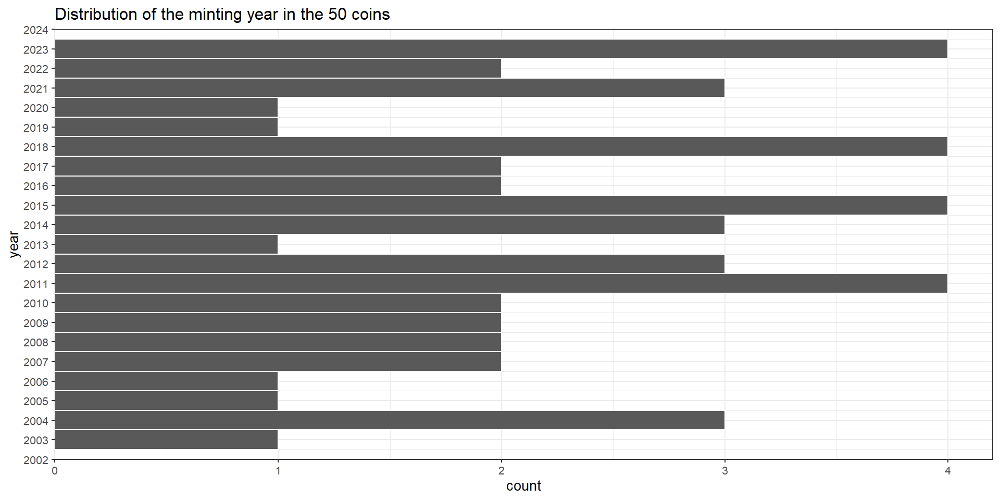
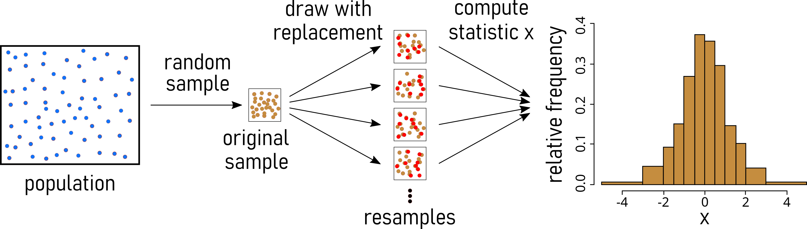
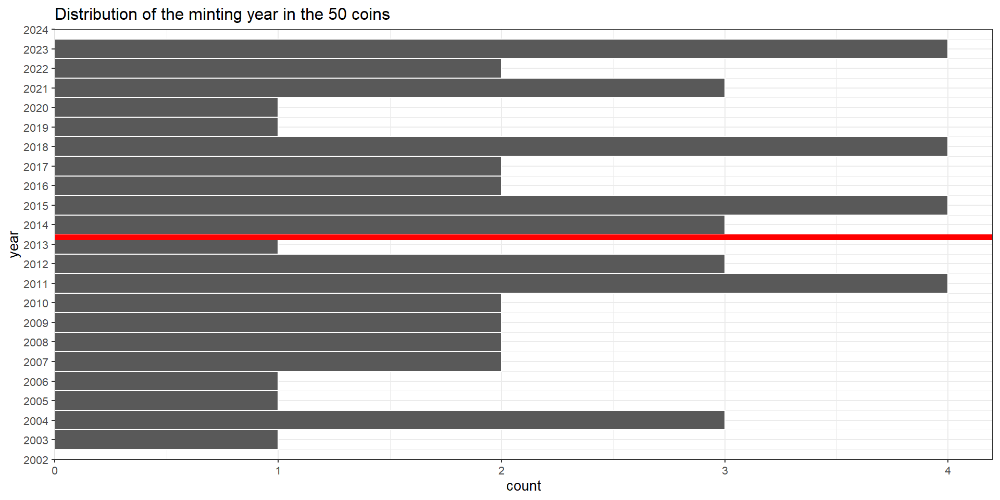

Data Bias
Data Bias
- bias
- the action of supporting or opposing a particular person or thing in an unfair way, because of allowing personal opinions to influence your judgment. Cambridge Dictionary

publication bias

- skews the representation of research findings by favoring the publication of studies with significant or positive results
- arises from various factors, including journal preferences, researcher behavior, and editorial decisions.
- can lead to an inaccurate perception of the true effect size or prevalence of a phenomenon in the scientific literature.
Random Sampling

- Definition: Selecting a sample from a population in a purely random manner, where every individual has an equal chance of being chosen.
- Advantages:
- Eliminates bias in selection.
- Results are often representative of the population.
- Disadvantages:
- Possibility of unequal representation of subgroups.
- Time-consuming and may not be practical for large populations.
Stratified Sampling

- Definition: Dividing the population into subgroups or strata based on certain characteristics and then randomly sampling from each stratum.
- Advantages:
- Ensures representation from all relevant subgroups.
- Increased precision in estimating population parameters.
- Disadvantages:
- Requires accurate classification of the population into strata.
- Complexity in implementation and analysis.
Systematic Sampling

- Definition: Choosing every kth individual from a list after selecting a random starting point.
- Advantages:
- Simplicity in execution compared to random sampling.
- Suitable for large populations.
- Disadvantages:
- Susceptible to periodic patterns in the population.
- If the periodicity aligns with the sampling interval, it can introduce bias.
Cluster Sampling

Definition: Dividing the population into clusters, randomly selecting some clusters, and then including all individuals from the chosen clusters in the sample.
Advantages:
- Cost-effective, especially for geographically dispersed populations.
- Reduces logistical challenges compared to other methods.
Disadvantages:
- Increased variability within clusters compared to other methods.
- Requires accurate information on cluster characteristics.
Bootstrapping

Definition: Estimating sample statistic distribution by drawing new samples with replacement from observed data, providing insights into variability without strict population distribution assumptions.
Advantages:
- Non-parametric: Works without assuming a specific data distribution.
- Confidence Intervals: Facilitates easy estimation of confidence intervals.
- Robustness: Reliable for small sample sizes or unknown data distributions.
Disadvantages:
- Computationally Intensive: Resource-intensive for large datasets.
- Results quality relies on the representativeness of the initial sample (garbage in - garbage out).
- Cannot compensate for inadequate information in the original sample.
- Not Always Optimal: Traditional methods may be better in cases meeting distribution assumptions.
- imagine all \(0.50€\) coins that are used today
- we are interested in the average minting year
- we can not just look at all the coins, we have to estimate the average minting year
- we assume the 50 coins to be a representative sample (is it though?)

Population \(N = ?\)
Population \(\mu = ? \rightarrow\) we want to know that!
sample mean \(\bar{x} = 2013.38\)
\(\bar{x} = 2013.38\) is the point estimate
Strategy to be saver about the mean minting year? \(\rightarrow\) MORE SAMPLES

- What is a good sample size to resample (how often)?
- Draw a number from the hat.
- Put the number back into the hat. (This is called: resampling with replacement)
- Why do we put the number back into the hat?
- Now do it.
non parametric confidence intervals (Ismay and Kim 2019)

German history at school

- history textbooks are sponsored by the national government and are written to put the national heritage in the most favorable light
- 21st-century Germany attempts to be an example of how to remove nationalistic narratives from history education
- a transnational perspective that emphasizes the all-European heritage, minimizes the idea of national pride, and fosters the notion of civil society centered on democracy, human rights, and peace
Military

- calculations when considering how to minimize bomber losses to enemy fire (WWII)
- recommended adding armor to the areas that showed the least damage
- areas where a bomber could take damage and still fly well enough to return safely to base
Cats

- cats who fall from less than six stories, and are still alive, have greater injuries than cats who fall from higher than six stories
- cats reach terminal velocity after righting themselves at about five stories, and after this point they relax, leading to less severe injuries
- cats that die in falls are less likely to be brought to a veterinarian than injured cats, and thus many of the cats killed in falls from higher buildings are not reported in studies
Alexander Bell and Western Union

- Bell was looking for partner to commercialize the telephone (kind of a big deal)
- He contacted Western Union, the market leader (who made a lot of money stringing telephone wires)
- “…There is nothing in this patent whatever, nor is there anything in the scheme itself, except as a toy. If the device has any value, the Western Union owns a prior patent … which makes the Bell device worthless. …”

Thanks xkcd
References
Ismay, Chester, and Albert Y. Kim. 2019. Statistical Inference via Data Science. Chapman & Hall/CRC: The R Series.

Social Media Feed